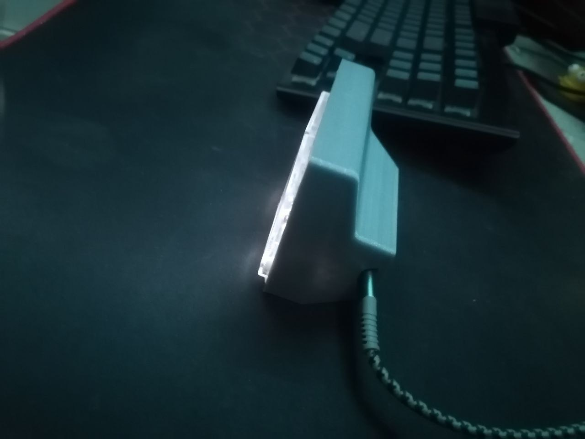
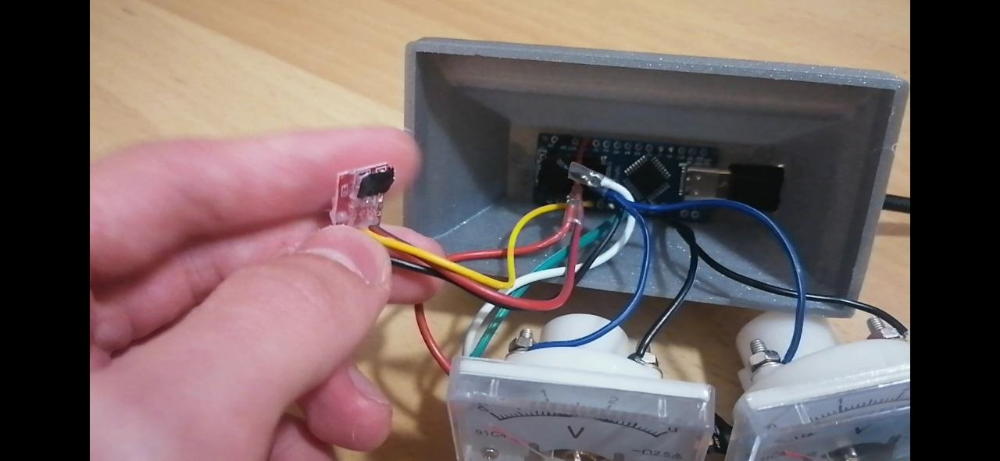
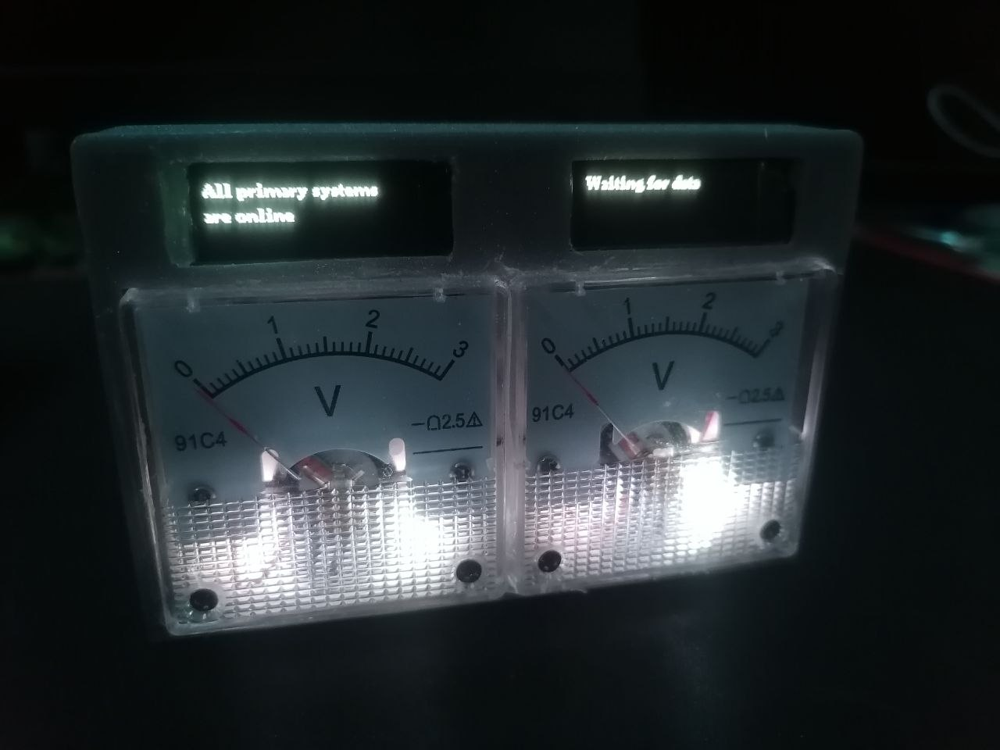

A hardware PC load monitor: a pair of analog gauges and two OLED screens show CPU/GPU load
in real time, with NeoPixel lighting for extra color feedback. Data comes from a Python
pipeline built on OpenHardwareMonitor.
MCU
Arduino Nano
DISPLAY
2×SSD1306 OLED
GAUGES
Analog (repurposed voltmeters)
LIGHTING
NeoPixel
DATA
Python + OpenHardwareMonitor
LAUNCH
Tray launcher (.exe)
01
STAGE 01
Wiring: Arduino Nano + 2×OLED + analog gauges
Base circuit: the Nano drives two OLED displays and a pair of analog voltmeters repurposed as load gauges.

02
STAGE 02
NeoPixel load indication
Added LED lighting that tracks CPU/GPU load, with color and brightness that shift with the readings.

03
STAGE 03
Python pipeline (OpenHardwareMonitor → Serial)
A desktop script reads sensor data through OpenHardwareMonitor and streams it to the Arduino over Serial.

04
STAGE 04 - CURRENT
Tray launcher
The pipeline is compiled to a .exe that runs and is controlled straight from the Windows system tray.